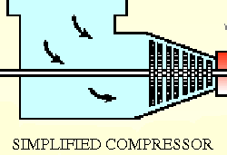
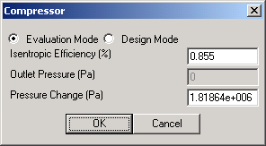
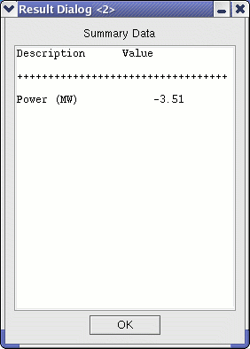

This module emulates either a compressor or expander. The thermodynamic calculations involve the assumption of an isentropic compression/expansion process coupled with an isentropic efficiency. The user specifies the isentropic efficiency and pressure change through the module. |
 |
|  | The User Interface first allows the user to input an Isentropic Efficiency for the Compressor/Expander (as fraction). The user must also specify a desired Pressure Change. Negative values decrease pressure through the module--modeling an Expander. Positive values increase pressure--modeling a Compressor. |
|  |
The summary table indicates the energy required by the module. When used to model compressors, the resultant number will be negative and will represent the power required to compress the inlet gas. When the module is used to model expanders, the number will be positive and represents the power generated as a result of the pressure drop. |